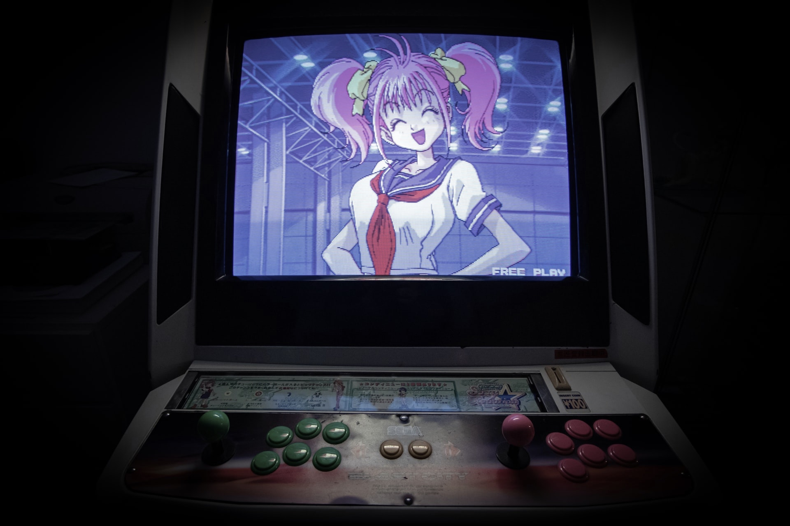

to Tokyo

Beautiful Nature
Delicious Food

Traditional History
Pop Culture


Great temple
Intro
Tokyo City (東京市, Tōkyō-shi) was a municipality in Japan and part of Tokyo-fu which existed from 1 May
1889 until its merger with its prefecture on 1 July 1943.[1] The historical boundaries of Tokyo City
are now occupied by the 23 Special Wards of Tokyo. The new merged government became what is now Tokyo,
also known as the Tokyo Metropolis, or, ambiguously, Tokyo Prefecture.

in 1868
the medieval city of Edo, seat of the Tokugawa government, was renamed Tokyo, and the offices of Tokyo
Prefecture (-fu) were opened.[1] The extent of Tokyo Prefecture was initially limited to the former
Edo city, but rapidly augmented to be comparable with the present Tokyo Metropolis.
in 1878
the Meiji government's reorganization of local governments[2] subdivided prefectures into counties or
districts (gun, further subdivided into towns and villages, later reorganized similar to Prussian
districts) and districts or wards (ku) which were in ordinary prefectures cities as a whole, e.g.
today's Hiroshima City (-shi) was then Hiroshima-ku; the three major cities of Tokyo, Osaka and Kyoto
were each subdivided into several such wards. In Tokyo Prefecture, this created 15 wards (listed
below) and six counties/districts.[3]
in 1888
the central government created the legal framework for the current system of cities (shi)[4] that
granted some basic local autonomy rights – with some similarities to Prussia's system of local
self-government as Meiji government advisor Albert Mosse heavily influenced the organization of local
government.[5] But under a special imperial regulation,[6] Tokyo City, like Kyoto City and Osaka City,
initially did not maintain a separate mayor; instead, the (appointed) governor of Tokyo Prefecture
served as mayor of Tokyo City.
in 1889 and 1898
The Tokyo city council/assembly (Tōkyō-shikai) was first elected in May 1889. Each ward also retained
its own assembly. City and prefectural government were separated in 1898.,[3] and the government began
to appoint a separate mayor of Tokyo City in 1898, but retained ward-level legislation, which
continues to this day in the special ward system.
from 1926 and then 1932
From 1926, the mayor was elected by the elected city council/assembly from its own ranks. The city
hall of Tokyo was located in the Yūrakuchō district, on a site now occupied by the Tokyo International
Forum.[7] Tokyo became the second-largest city in the world (population 4.9 million) upon absorbing
several outlying districts in July 1932, giving the city a total of 35 wards.[1]
from 1943 to 1947
In 1943, the city was abolished and merged with Tokyo Prefecture to form the Tokyo Metropolitan
Government,[1] which was functionally a part of the central government of Japan: the governor of Tokyo
became a Cabinet minister reporting directly to the Prime Minister. This system remained in place
until 1947 when the current structure of the Tokyo Metropolitan Government was formed.[1]